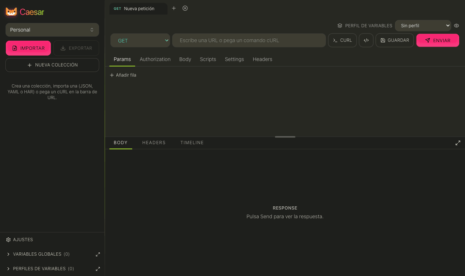

Início › Guia de recursos
Guia do Caesar: todos os recursos, um por um
O Caesar é um cliente de API para desktop feito para ser rápido: abre instantaneamente, mantém tudo na sua máquina e não exige conta para começar. Este guia percorre cada recurso com um GIF do resultado real, da sua primeira requisição até testes, GraphQL, WebSockets e trabalho em equipe.
O que é o Caesar?
O Caesar é um cliente de API para desktop, para Windows, macOS e Linux. Com ele você cria, envia e testa requisições HTTP, GraphQL e WebSocket, organiza tudo em coleções e compartilha com sua equipe, tudo em uma interface limpa onde a cor e o teclado economizam cliques.
- Local-first: no modo Convidado suas coleções ficam no seu dispositivo. Funciona offline e sem conta.
- Rápido de verdade: é construído com Rust e Tauri, sem um navegador embutido.
- Familiar: se você vem de outro cliente de API, pode importar suas coleções e seus scripts
pm.*continuam funcionando. - Fair Source (FSL): o código é público e de uso gratuito. Não é código aberto: é proibido vendê-lo.
Para quem é? Para quem testa APIs todos os dias (backend, frontend, QA, mobile) e quer uma ferramenta leve, privada e sem atrito. Também para quem precisa compartilhar coleções com a equipe sem montar infraestrutura.
Por que ele é tão rápido
A velocidade do Caesar não é um truque: vem da forma como ele é construído.
Instalar o Caesar
Baixe o instalador do seu sistema na página de download ou na loja de aplicativos:
| Sistema | Arquivo / Loja |
|---|---|
| Windows | Instalador .exe de 64 bits (também .msi) · Em breve na Microsoft Store |
| macOS (Intel e Apple Silicon) | .dmg universal, assinado e notarizado pela Apple |
| Ubuntu (Snap Store) | sudo snap install caesar ou pela Ubuntu App Center (Snap Store) |
| Linux | .deb (Debian/Ubuntu) ou AppImage (qualquer distro) |
Na primeira vez, pode aparecer um aviso do sistema, principalmente no Windows (SmartScreen). Isso é normal em um projeto novo, e o guia de avisos explica em que clicar. Depois disso, o Caesar se atualiza sozinho.
Sem linha de comando. O Caesar é um aplicativo desktop: você não precisa de Node, Docker nem de nenhuma instalação extra para usá-lo.
Sua primeira requisição
Abra o Caesar e clique em Nova aba (Ctrl+T). Escolha o método (GET, POST, PUT, PATCH, DELETE, HEAD ou OPTIONS), digite a URL e clique em Enviar ou pressione Ctrl+Enter.
- Digite a URL na barra superior.
- Clique em Enviar. Você verá uma animação das etapas da requisição (resolvendo o nome, conectando, enviando, recebendo).
- Leia a resposta abaixo: status, tempo, tamanho e corpo.
- Pressione Ctrl+S para salvá-la em uma coleção.

Além dos sete métodos habituais, em Configurações você pode adicionar métodos extras (por exemplo, os do WebDAV). Apenas CONNECT e TRACE são rejeitados.
Parâmetros e cabeçalhos
As abas Params e Headers usam um editor de chave/valor: você adiciona linhas, ativa ou desativa cada uma com a caixa de seleção sem apagá-la, e a URL se atualiza sozinha.
- Desmarque uma linha para testar sem ela e sem perdê-la.
- Você pode usar
{{variables}}em chaves e valores (veja Variáveis e perfis). - Se você colar uma URL com
?a=1&b=2, os parâmetros aparecem na tabela.
Corpo da requisição
Na aba Body você escolhe o formato que a sua API precisa:
| Tipo | Quando usar |
|---|---|
| JSON | APIs REST modernas. Editor com verificação de sintaxe e cores. |
| Texto | XML, texto simples ou outro conteúdo bruto. |
| Form-data | Formulários com anexos de arquivos (até 100 MB por arquivo). |
| x-www-form-urlencoded | Formulários clássicos. |
| GraphQL | Editor dedicado de Query e Variables (veja GraphQL). |

Por segurança, o Caesar só anexa arquivos que você escolheu no seletor de arquivos do sistema.
Lendo a resposta
A resposta é exibida com o status (com cores), o tempo e o tamanho, e três visualizações:
- Pretty: JSON formatado e colorido. Você pode ocultar valores vazios para ler melhor.
- Raw: o texto exatamente como chegou.
- Timeline: as etapas da requisição com sua duração.
Com o filtro JSONPath você mantém apenas a parte que interessa, por exemplo $.data[0].id. E com Ctrl+F você busca dentro da resposta (veja Abas e busca).
As respostas são lidas até 10 MB; se uma for maior, o Caesar a trunca e avisa você para que a janela não trave.
Colar e copiar cURL
Se alguém lhe passar um comando curl (da documentação de uma API, das ferramentas de desenvolvedor do navegador ou de um colega), cole-o direto na barra de URL. O Caesar cria a requisição com seu método, cabeçalhos e corpo.

E o inverso também vale: copie qualquer requisição como cURL para compartilhá-la em um ticket ou executá-la em um terminal. Há um comando para isso (sem atalho padrão, você pode atribuir um).
Autenticação
Na aba Authorization você escolhe como se identificar. O Caesar suporta estes tipos:

A opção Inherit é a mais prática: você define a autenticação uma vez na coleção ou pasta e todas as requisições dentro dela a usam. Se o token mudar, você troca em um só lugar.
Dica: guarde o token em uma variável ({{token}}) e use essa variável na autenticação; assim você não o cola em cada requisição.
Variáveis e perfis
As variáveis permitem escrever {{baseUrl}} em vez de uma URL fixa. Há três níveis:
- Variáveis globais: valem em todas as suas coleções.
- Variáveis de coleção: apenas para aquela coleção ou pasta.
- Perfis de variáveis: conjuntos nomeados (Desenvolvimento, Staging, Produção...) que você ativa com o seletor ao lado de Enviar.
- As variáveis
{{x}}aparecem em outra cor na URL, nos cabeçalhos, nos parâmetros e na autenticação, para que nenhuma passe despercebida. - Ctrl+clique em uma variável abre seu valor para ver e editar sem sair da requisição.
- Ctrl+Space abre o seletor de variáveis.
- Você pode marcar variáveis como secretas para que não fiquem visíveis à primeira vista.
- Ao importar uma coleção com ambientes, eles viram perfis e seus globais viram variáveis globais.
Testes e scripts
A aba Scripts executa um script quando a resposta chega (os resultados aparecem em uma aba do painel de resposta). Ela usa uma sintaxe familiar (pm.*), então o que você já sabe continua valendo:
pm.test("responds 200", () => {
pm.expect(pm.response.code).to.equal(200);
});
const data = pm.response.json();
pm.test("returns users", () => {
pm.expect(data.length).to.be.above(0);
});
pm.testepm.expectpara verificar status, cabeçalhos e corpo.pm.response.json()para ler o corpo já interpretado.pm.environment.set,pm.collectionVariables.setepm.globals.setpara guardar valores.
Seguro por design. Os scripts rodam em um interpretador dedicado para um subconjunto de JavaScript: sem rede, sem acesso ao sistema de arquivos e sem eval. Por isso um script importado não pode fazer nada fora do seu próprio escopo.
Encadeando requisições
Um caso típico: fazer login e usar o token nas outras requisições. Com um teste na requisição de login:
const r = pm.response.json();
pm.environment.set("token", r.access_token);A partir daí, qualquer requisição pode usar {{token}} no cabeçalho ou na autenticação Bearer. Você executa o login uma vez e o resto fica autenticado, sem copiar e colar.
Coleções e pastas
As coleções são o caderno onde você guarda suas requisições. Crie uma na barra lateral, adicione pastas dentro de pastas e arraste e solte para reordenar.

- Cada coleção ou pasta pode ter suas próprias variáveis e autorização, herdadas por tudo o que ela contém.
- Salva sozinho: o Caesar salva automaticamente e mantém suas abas e rascunhos quando você o fecha.
- Você pode compartilhar uma coleção com sua equipe (veja Sync e equipes).
Importar e exportar
Você não começa do zero. O Caesar importa o que você já tem e exporta quando quiser:
| Formato | Importar | Exportar |
|---|---|---|
| Outros clientes de API (coleções v2.1 e ambientes) | Sim | Sim (JSON) |
| Outros clientes de API (exportações JSON) | Sim | – |
| JSON do Caesar | Sim | Sim |
| YAML | Sim | Sim |
| HAR (do navegador) | Sim | Sim |
| cURL | Colando na barra de URL | Copiar como cURL |

Antes de compartilhar uma coleção, o Caesar pode fazer um backup para que você não perca nada.
Gerador de código
Com o botão </> você transforma a requisição ativa em código pronto para colar no seu projeto. São 20 linguagens e bibliotecas, incluindo cURL, Python (Requests), JavaScript (Fetch, XHR), Node.js (Axios), Go, Rust, Java, Kotlin, C#, PHP, Ruby, PowerShell, Swift e Dart.
Você pode ajustar opções como indentação, timeout ou seguir redirecionamentos, e copiar o resultado com um clique.
GraphQL
Escolha o corpo GraphQL e o Caesar oferece um editor de Query e outro de Variables:
- Carregue o schema por introspecção.
- Autocompletar campos e tipos enquanto você digita.
- Explorador de schema para navegar por tipos e campos.
- Beautify para formatar a query.
- Gerar variáveis a partir da query e um seletor de operação quando houver várias.

As requisições GraphQL são importadas e exportadas no formato padrão de coleções.
WebSockets
Crie uma requisição WebSocket, conecte e acompanhe a conversa em uma linha do tempo: o que você envia e o que recebe, com hora e tamanho.

- Escreva a URL com
ws://ouwss://(se você usarhttp(s), ela é convertida). - Você pode definir subprotocolos separados por vírgulas.
- Envie mensagens de texto ou binárias (em hexadecimal ou base64) e inspecione binários em um hex dump.
- Suporta
{{variables}}na URL.
Abas e busca
Trabalhe com quantas abas precisar. O Caesar lembra das que você tinha abertas e as restaura exatamente como estavam quando você o inicia de novo.

- Ctrl+T nova, Ctrl+W fechar, Ctrl+1…9 ir para a aba N.
- Alt+← / → volta para a aba que você visitou antes ou depois.
- Ctrl+F busca na resposta ou no editor.
- Clique com o botão direito ou use Ctrl+Shift+W para fechar todas e ir para a tela inicial com o gato.
No macOS, Ctrl é substituído por Cmd.
Workspaces
Um workspace é um conjunto separado de coleções, variáveis e abas: um para o trabalho, outro para projetos pessoais, outro para cada cliente. Você alterna pelo seletor da barra lateral.

O modo Convidado e as contas sem Pro incluem um workspace; com o Pro você pode ter quantos quiser.
Atalhos de teclado
Todo comando do Caesar tem um atalho, e você pode alterar todos eles. Abra o editor com Ctrl+/.

| Ação | Atalho padrão |
|---|---|
| Enviar a requisição | Ctrl+Enter |
| Salvar na coleção | Ctrl+S |
| Nova aba / Fechar aba | Ctrl+T / Ctrl+W |
| Ir para a barra de URL | Ctrl+L |
| Buscar | Ctrl+F |
| Escolher uma variável | Ctrl+Space |
| Abrir configurações | Ctrl+, |
| Ver e editar atalhos | Ctrl+/ |
Você também pode criar ações personalizadas que encadeiam vários comandos e colocar botões à sua escolha ao lado da URL.
Temas, fontes e idiomas
O Caesar vem com seis temas: Monokai (padrão), Dracula, Tokyo Night, Nord, One Dark e GitHub Light para quem prefere um fundo claro.

Você também pode escolher a fonte e o tamanho do texto, desativar animações e ajustar a largura da barra lateral. A interface está disponível em espanhol, inglês, alemão, francês e italiano.
Configurações de rede
Em Configurações você controla como as requisições são enviadas:
| Configuração | O que faz |
|---|---|
| Seguir redirecionamentos | Segue até 10 redirecionamentos, ou nenhum. |
| Timeout | 30 segundos por padrão. Com 0 ou mais de 1 hora, usa-se o máximo de 3600 s, útil para depurar sem que o erro dispare. |
| Verificar SSL | Desative apenas para testar servidores com certificados autoassinados. |
| Versão HTTP | Automática, HTTP/1.1 ou HTTP/2. |
| Métodos extras | Adiciona métodos personalizados além dos habituais. |
Sync e equipes
Com uma conta Pro você pode usar as mesmas coleções em vários computadores e compartilhá-las com outras pessoas.
- Sync pessoal: suas coleções, variáveis e perfis aparecem em todos os seus dispositivos. As alterações são mescladas por item, então dois dispositivos não sobrescrevem o trabalho um do outro.
- Criptografado no seu dispositivo: o que é enviado já sai criptografado do seu computador; o serviço armazena apenas dados ilegíveis.
- Chave de recuperação: fica com você e permite recuperar seus dados se você perder um dispositivo.
- Vincular um novo dispositivo: é aprovado a partir de outro dispositivo seu com um código de seis dígitos que você compara nas duas telas.
- Equipes: compartilhe uma coleção ou um workspace com um código; quem o inserir entra e vê as alterações.

Importante: em uma coleção compartilhada, qualquer pessoa com o código pode ler e modificar o conteúdo; não há papéis. Compartilhe o código somente com quem deve poder editar.
Convidado, conta e Pro
| Modo | Inclui |
|---|---|
| Convidado (grátis) | Todos os recursos de requisição, testes, GraphQL, WebSockets, importação/exportação e gerador de código. Dados apenas no seu dispositivo, 1 workspace. |
| Conta (teste de 7 dias) | Igual ao Convidado, localmente, enquanto você decide se ativa o Pro. Após 7 dias sem o Pro, a conta é excluída. |
| Pro (assinatura) | Sync criptografado, equipes e coleções compartilhadas, e workspaces ilimitados. |
O preço, o período de cobrança e os impostos aparecem na página de checkout antes de você pagar. Você pode cancelar quando quiser em Configurações → Conta e assinatura → Gerenciar assinatura e recebe o reembolso em até 14 dias. Mais detalhes em Preços e assinatura.
Privacidade e segurança
- Sem telemetria nem análises. O Caesar não envia dados de uso.
- A interface não faz requisições de rede: elas são executadas pelo núcleo em Rust, que valida as URLs, só permite http e https e limita o tamanho das respostas e dos arquivos.
- Suas chaves nunca saem do sistema: a chave de criptografia é armazenada no chaveiro do seu sistema operacional.
- Permissões mínimas e uma política de segurança rigorosa no aplicativo.
- No modo Convidado seus dados nunca saem do seu dispositivo.
Mais em Segurança e privacidade e na política de privacidade.
Atualizações
O Caesar se atualiza sozinho: ao iniciar, procura uma nova versão e, se houver, baixa, instala e reinicia. Suas abas e rascunhos são mantidos. Cada pacote é assinado e o aplicativo verifica a assinatura antes de instalá-lo.
- Em Configurações → Atualizações você pode desativá-las ou clicar em Verificar atualizações.
- No Linux, se você instalar o Caesar pela Snap Store (
sudo snap install caesarou pela Ubuntu App Center), o Snap o atualiza automaticamente; com o AppImage ele se atualiza dentro do app, e o.debé reinstalado manualmente.
Boas práticas
- Use variáveis para o que muda (servidor, versão, tokens) e perfis para cada ambiente.
- Defina a autenticação na coleção e deixe as requisições em "Inherit".
- Adicione pelo menos um teste a cada requisição importante: status e uma verificação do corpo.
- Nomeie as requisições com um verbo e um recurso ("Listar usuários", "Criar pedido") e agrupe-as em pastas.
- Exporte uma cópia das suas coleções importantes de vez em quando.
- Não deixe segredos na URL: use variáveis secretas ou autenticação.
- Use um workspace por projeto ou cliente para que as variáveis não se misturem.
Solução de problemas
A requisição não conecta
Verifique se a URL começa com http:// ou https://, se não há nenhuma variável sem resolver (ela aparece em outra cor) e se você tem conexão. Veja a linha do tempo da resposta: ela mostra em que etapa falha.
Erro de certificado SSL
Se você está testando um servidor local com certificado autoassinado, desative Verificar SSL nas Configurações. Ative-o novamente para APIs reais.
Recebo 401 ou 403
Verifique a aba Authorization: se estiver em "Inherit", confira a da coleção. Confirme que o token não expirou e que a variável existe no perfil ativo.
A requisição expira por timeout
Aumente o timeout nas Configurações. Com 0 usa-se o máximo (1 hora), pensado para depuração.
Meus testes não fazem nada
Os testes são executados depois que a resposta é recebida, então é preciso enviar a requisição. Se houver um erro no script, ele aparece ao lado dos resultados.
Não consigo sincronizar nem compartilhar
Esses recursos exigem o Pro. No modo Convidado ou com a conta em teste, o Caesar funciona localmente. Se você já pagou, clique em Já paguei, verificar em Conta e assinatura.
Perguntas frequentes
O Caesar é bom para testar APIs?
Sim: cobre REST, GraphQL e WebSocket com testes, variáveis, perfis, importação de coleções e geração de código, em um app leve que funciona offline.
É grátis e de código aberto?
É grátis no modo Convidado e seu código é público, mas não é código aberto: usa a licença FSL e é proibido vendê-lo. Cada versão passa a ser MIT após dois anos.
Onde ficam armazenadas as minhas coleções?
No seu dispositivo. Elas só saem dele se você ativar o sync ou compartilhar com uma equipe, e nesse caso são criptografadas.
Posso trazer minhas coleções de outro cliente de API?
Sim. Importe o arquivo da coleção (e dos environments, que viram perfis) pela barra lateral.
Meus scripts atuais funcionam?
Os testes com pm.test, pm.expect, pm.response.json() e as funções para guardar variáveis funcionam. O Caesar usa um interpretador seguro para um subconjunto de JavaScript, então um script que dependa de bibliotecas externas ou da rede não será executado.
Existe linha de comando ou integração com CI?
Por enquanto o Caesar é um aplicativo desktop. Você pode exportar requisições como cURL ou código para usar nos seus scripts.
Preciso de uma conta?
Não. A conta só é necessária para sincronizar e trabalhar em equipe.
Em quais sistemas ele roda?
Windows (.exe e .msi; em breve na Microsoft Store), macOS (Intel e Apple Silicon) e Linux (Ubuntu App Center / Snap Store com sudo snap install caesar, .deb e AppImage).
Experimente agora
É grátis para baixar e você não precisa de conta. Se faltar alguma coisa ou você encontrar um bug, conte para nós no GitHub.